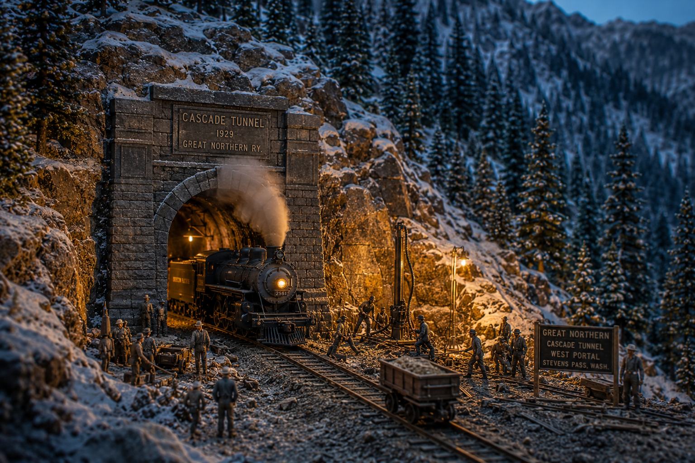

Conquering the Cascades: The Eight-Mile Tunnel That Answered Wellington

You'll remember Wellington — the two trains the mountain shrugged into the canyon on the first of March, 1910, and the ninety-six souls it kept. That tale ended with the snow, but it didn't really end there, for a railroad that has lost ninety-six people to a slope does not simply mourn and carry on. It goes looking for a way to never stand in that snow again. And the answer the Great Northern came to, after fifteen years of thinking on it, was the boldest thing iron and powder had yet attempted on this continent: don't fight the mountain at the top where the snow falls. Go under it. Go a mile and a half south and five hundred feet lower, and bore clean through the granite heart of the Cascades for nearly eight miles in the dark.
There had been a tunnel before, mind. The first Cascade Tunnel opened back in 1900, a touch over two and a half miles, and it was a fine piece of work for its day. But it sat up high where the slides ran, and its west portal opened out near a little place called Wellington, and you know what the snow did there. A short tunnel high on the mountain was never going to be enough. The new one would have to be long enough to swallow the whole summit.
Three Years in the Rock
They broke ground in December of 1925, and a St. Paul outfit by the name of A. Guthrie and Company took the contract. Now, to bore near eight miles of tunnel from two portals alone would take a man's lifetime, so they didn't. They sank a pioneer bore alongside the main one — a smaller parallel gallery running the length of the work — and from it they cut crosswise into the main line at intervals, opening up fresh faces in the middle of the mountain. That way the rock could be attacked from many places at once instead of just the two ends, and the muck and the men and the air could move where they were needed.
A mountain is patient, and a mountain is large. The only way to beat it in three years is to stop fighting it in one place and fight it everywhere at once.
It was hard, wet, dangerous work, and it never stopped — day shift and night shift, the drills hammering granite, the powder going off, the muck trains hauling out the broken rock by the ton. Men died in there, as men did in every great bore of that age; the rock does not give up eight miles of itself for nothing. But Guthrie's crews drove on through better than three years of it, two headings crawling toward each other through solid stone, each one trusting the surveyors' figures that the other was coming straight at them in the dark.
The Day the Headings Met
Here is the thing that ought to stagger you, and it staggered the engineers of the day too. When the two crews finally holed through and met somewhere under the mountain, after years of separate digging from opposite directions, with nothing but instruments and arithmetic to guide them — they met dead true. The line and the grade came together with an error you could have hidden behind your hand. To drive two tunnels miles into a mountain and have them shake hands in the middle, that close, with the surveying tools of the 1920s, is a feat I'd call near to a miracle if I didn't know how much cold, careful science went into it.
And when it was finished it was the longest railroad tunnel in all the Americas — 7.8 miles of it — and it would hold that crown for sixty years, until the Canadians drove the Mount Macdonald Tunnel through the Selkirks in 1989. Funny thing, that: the same Selkirks where Rogers Pass had eaten its section crews three days after Wellington. The mountains of the Northwest gave up their two longest tunnels in answer to the same kind of grief.
A President on the Wire
They opened her on the twelfth of January, 1929, and the whole country listened. The young National Broadcasting Company put the dedication out over the radio, coast to coast, and President Herbert Hoover himself spoke down the wire to mark the moment. Think on that — a hole in a mountain in the Washington Cascades, and the President of the United States talking about it into the ears of the nation. That's how much it meant. It cost some fourteen million dollars and better than three years and more than a few lives, but it took the trains down off the killing slopes for good.
The Empire Builder still runs through that bore today, same as the freight does, sliding eight quiet miles through the dark under Stevens Pass while the snow does whatever it likes up above. The passengers mostly never know they're inside the answer to Wellington. But you do now. Next time you tell the tale of the white death, tell them how it ended — not in the snow, but in the granite, with a hole bored clean through the mountain so the snow could never reach the rails again.
What Really Happened
The new (second) Cascade Tunnel was bored beneath Stevens Pass, Washington, by A. Guthrie & Company under contract to the Great Northern Railway. Ground was broken in December 1925 and the tunnel opened January 12, 1929. At 7.8 miles (12.6 km), it was the longest railroad tunnel in the Western Hemisphere from 1929 until 1989, when British Columbia's Mount Macdonald Tunnel surpassed it. It cost roughly $14 million.
The project was driven in part by the 1910 Wellington avalanche disaster (96+ dead), which struck near the west portal of the original 1900 Cascade Tunnel. The new tunnel sits about 1.5 miles south of and 500 feet lower than the original, removing trains from the avalanche-prone summit. Crews worked multiple faces via a parallel pioneer bore, and the headings met with famously small error. The dedication was broadcast nationwide by NBC, including remarks from President Herbert Hoover. The tunnel remains in use today on BNSF's Scenic Subdivision and carries Amtrak's Empire Builder. The lantern-keeper dialect and framing above are storytelling; the dates, length, cost, and records are drawn from the historical record.